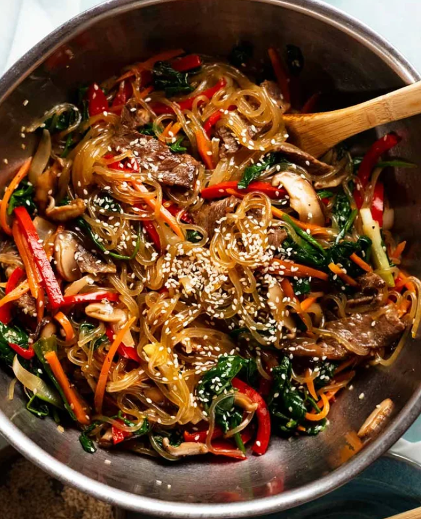

All Recipes
Search for your favorites or discover new recipes 4 keeps!
Meal Type
Cuisine Type
Ingredient
Difficulty
Recommended Recipes



Stir-Fry Garlic Bok Choy with Mushroom
Bokchoy with earthy mushrooms, and fragrant garlic.
View Recipe